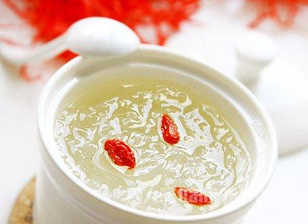

大家好，我是燕窝品鉴师李丽,泰然品牌创始人。 五年前我跟随老公来到马来西亚，老公一家是朴实的马来西亚华侨，一直在做燕窝生意，我们有自己的燕屋和挑毛工厂。 近年来我们多次回国，看到国内实体店天价燕窝，也看到不法商人用各种手段造假，非常痛心，特别很多食用燕窝的都是孕妇，燕窝不是毒药，绝不能拿健康当做牟利的工具。 所以我决定通过微信号，和大家面对面，绕过所有中间商，直接把孕妇燕窝燕窝级品质送到消费者手中！我将公开燕窝从采摘到包装的整个生产流程，是你在别处看不到的。 想了解燕窝的做法相关问题？想试吃燕窝的朋友。
都可以加我微信：Dq10039 （长按可复制）
在我摸透整个燕窝市场品质、价格差异后，也知道了国内一些不良商家，如何通过层层差价，把劣质燕窝以高于成本价的10倍，卖给消费者…… 如果你想知道如何挑到价格合理、品质上乘的燕窝，一定要认真看完这篇文章！想了解什么样的燕窝营养含量更高，怎样吃吸收效果更好，可以加我微信Dq10039 （长按可复制） 做了这么多年的燕窝，我发现大家对买燕窝，有两个痛点：一是怕假；二是怕贵！ 今天我将详细讲解燕窝行业内幕，教你买到优质好燕窝。
懂燕窝的朋友都知道，马来西亚是我国第一个燕窝准入国家，有着严格的燕窝出口标准，素来以品质著称。再加上独特的东南亚气候，纯净无污染的海域，丰富的食物来源，是金丝燕理想的生活环境。所以马来西亚的燕窝品质更好。 燕屋——天然燕窝的起点 我家燕屋选址的时候，特别选择在森林茂密的地方，方圆５０公里内无空气受污染的工业区，方便金丝燕捕食。并且要由非常有经验的师傅管理，让金丝燕驻巢的时更有安全感。 燕屋里会播放金丝燕的鸣叫声，吸引金丝燕来驻巢，把燕屋当成长久的家。有的燕子还特别喜欢在扬声器边驻巢。 我们家在马来西亚拥有100余栋自建燕屋，每栋燕屋温度必须严格控制在27.9°—28.6°之间，湿度要维持到80%以上。而且屋内不能有燕鸣以外的杂音，还要保持暗度，采摘燕盏也不例外，只能打手电筒。 在燕屋中形成的燕窝叫屋燕。盏型更饱满，主要会有灰白、微黄等颜色。我的朋友圈里会发一些采摘燕窝的小视频，感兴趣的朋友欢迎添加微信Dq10039（长按可复制） 燕农从采摘下来的燕窝中挑选出毛少品质高的极轻毛燕、轻毛燕，送去加工中心进行挑毛后，就是你们拿到手上的燕窝了。 【揭秘】重毛燕、中毛燕杂质多，是无法做手工干挑的，但有一些不良商家用漂白剂或化学物质浸泡，让燕窝看起来干净洁白，实际上没营养不说，吃了还损坏身体，就是这样的低成本燕窝用低价卖给外行人，所以大家记住“一分钱一分货”这个道理，不能只看价格，不看品质和真假。  我们家燕窝原料，都是品质上乘的轻毛燕。
我们的每个挑毛师都会定期做体检，身体健康的才能上岗。每天进入挑毛间前，都要经过4-5次消毒，统一更换服装、佩戴手套、口罩、头套等，确保不把细菌带入工作区，污染燕窝。 每一盏燕窝都要经过8道挑毛工序，才能达到合格的干净度，采用传统纯手工干挑技术，才能更好的保留燕窝原始的形态，让每一盏燕窝泡发、味道和口感都特别好。当然由于干挑技术难度很大，一名熟练的挑毛工人，一天也只能挑出7~8盏。 介绍一下我们这我们这干挑技术很好的师傅——姆拉阿加，在我家一做就是十年，不仅心细手巧，还总结出了一套高效率的挑毛方法，缩短了挑毛的时间，还能保证每一盏都干净卫生。 我们的每一盏燕窝，都是个头6g以上的一等级燕盏，泡后不结块，水清静无异味，燕丝分明弹性好，口感顺滑，颜色晶莹剔透。 因为我们家本身就是产地直供销售，没有中间商赚差价，价格也非常公道，大概就是等同于国内买小燕盏的价格，在我们这里可以买到一等级大燕盏。所以我们不怕货比货，也不怕价比价，和我打过交道的朋友都知道，本人非常热情好客，燕窝品质好价格又实惠服务还特别好，所以买过的朋友都几乎成了我们的长期客户还有转介绍。 马来西亚纯手工干挑燕窝源头直采，从工厂直接送到您手中比实体店便宜50%,咨询了解微信 Dq10039（长按可复制）
做了这么多年燕窝，一直坚持只做纯正天然的燕窝，我家的燕窝全部都来自马来西亚自家的燕屋，所有环节没有任何化学添加，品质优劣一看便知。 天然的燕窝外形底座不统一，呈现自然的状态，表面呈现米白色或淡黄色，这是燕窝本身天然的色泽。燕囊清晰丝丝分明，燕丝之间有自然的缝隙，底座和燕角的部分都是很厚实的，闻起来还有蛋清的香味。 好货必须出自好料！燕碎或小盏在去除杂质过程中需要经过复杂的加工处理，因为本身的市场价值不高，在人工费用那么贵的情况下是不可能做人工挑毛这个工序的，所以我们家坚决不做影响人体健康、影响口碑的生意！ 现在市面上好多燕窝小作坊为了节省时间和成本，大肆采用刷胶、漂白、熏蒸等手段代替精细的手工挑毛。 这种深度化学加工的劣质燕窝，虽然卖相好，却对人的身体百害而无一利！这样的燕窝，不要说给孕妇和孩子吃，正常人吃了也受不了！ 燕窝中唾液酸含量！ 一盏燕窝等于5罐奶粉 燕窝富含唾液酸，其含量高达10%左右。 一罐495克的婴儿奶粉，唾液酸含量不到0.5克，而10克燕窝即含有1克唾液酸 一盏燕窝等于100个鸡蛋 3g燕窝补充的唾液酸0.21g，补充相同唾液酸需同时吃下12个鸡蛋 鸡蛋摄入过多易产生胆固醇摄入过量问题，需严格控制 一盏燕窝等于健身30分钟 每100g燕窝中仅含0.35g脂肪，每天吃5g燕窝，逛街7分钟、或快走1分钟就消耗完 真正的低脂肪，高蛋白食物 一盏燕窝等于敷7天面膜 面膜已成为女性护肤中不可缺少的一部分，但面膜只能缓解皮肤表皮因子，治标不治本 现在有越来越多女性选择吃燕窝，各种新闻、电视剧、电影、明星采访中，都毫不吝啬对燕窝的夸赞，只有吃过才真的能明白“为何那么多女人一吃燕窝就停不下来——因为它的好处实在是太多了
1、燕窝里的表皮生长因子也就是我们经常说的“EGF”，对皮肤有好处，被科学界誉为“美丽因子”。 2、孕期吃燕窝也是很好的滋补方式，因为燕窝营养价值丰富，对宝宝和孕妈都有好处。看看38岁的刘小姐就知道了，气色这么好，不看肚子哪知道这是怀二胎的妈妈呀？ 3、燕窝是调理身体非常好的滋补品，身体上很多小问题都可以通过吃燕窝去改善。 4、经常吃燕窝滋养，整个人的身体素质增强了，气色也更好了，心情当然会越来越好。
近年来，燕窝广受市场的认可，一些消费者对燕窝的行情不太了解，殊不知燕窝的价格也藏着很大的猫腻。 纯天然燕窝产量有限，很多商家大肆鼓吹价格层层炒高，消费者便误以为燕窝天价望而兴叹。其实像是你们所熟悉的大品牌燕窝，都是将人工费、广告费、店面费等等费用加诸在消费者身上。所谓天价，至少有三分之一是掺了水分的。 消费者花高价购买燕窝，很多时候吃了市场信息不透明的亏，所以买燕窝，要从源头购买，看得到源头的燕窝才是物美价廉的高品质燕窝，自己和家人吃的也放心！ 承诺每一位消费者用诚信经营，创造百年燕窝品牌。
为了每一盏燕窝的纯天然0添加好品质，我们一直在努力。我希望创造一个燕窝品牌，百年屹立不倒。从你收到我家的燕窝开始，感受自然的馈赠、神奇的效果，在这一刻，我们的一切努力，就有了更深的价值。 如果你有任何关于燕窝的疑问，不知道买的燕窝品质如何，想看燕窝加工厂视频直播，想知道炖煮燕窝食谱，怎么吃燕窝效果加倍等等，欢迎随时加我微信 ：Dq10039 （←长按可复制），买不买都没关系，就当交个朋友，不需要有任何心理负担。